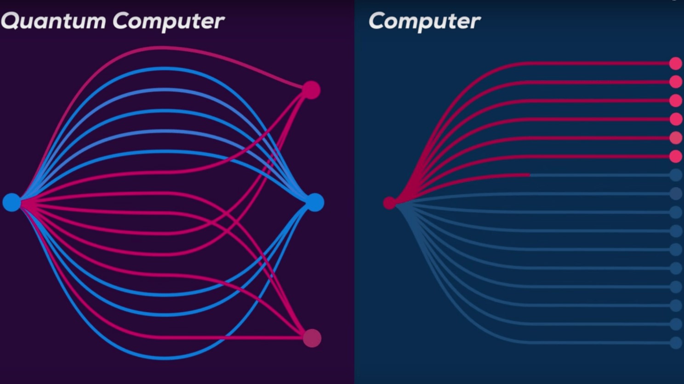

Квантовый компьютер — новый тип устройств, он использует в своей работе принципы квантовой механики. Это раздел науки, которая изучает поведение атомов и еще более мелких (субатомных) частиц: фотонов, электронов, нейтрино. Законы взаимодействия между ними существенно отличаются от того, что мы привыкли видеть вокруг, в «большом» мире. Единицей информации в квантовом компьютере является квантовый бит, или кубит, одно из свойств которого — суперпозиция, то есть комбинация всех возможных состояний. Представьте, что нужно открыть N дверей. Обычный компьютер будет открывать их по очереди, квантовый может открыть все сразу.
Как работает квантовый компьютер?
Квантовые компьютеры для вычислений используют такие свойства квантовых систем, как суперпозиция и запутанность. В суперпозиции квантовые частицы представляют собой комбинацию всех возможных состояний, пока не произойдет их наблюдение и измерение. Запутанные кубиты образуют единую систему и влияют друг на друга. Измерив состояние одного кубита, возможно сделать вывод об остальных. С увеличением числа запутанных кубитов экспоненциально растет способность квантовых компьютеров обрабатывать информацию.
Чем квантовый компьютер лучше обычного?
Благодаря тому, что кубиты находятся сразу в нескольких состояниях и связаны между собой, квантовые машины могут параллельно перебрать сразу все варианты решения — в отличие от обычных компьютеров, которые перебирают варианты последовательно и довольно медленно.
Можно условно сравнить это с калейдоскопом: если с обычным компьютером вам нужно покрутить прибор, чтобы получить разные картинки, то квантовый уже давно всё «покрутил» и сложил в одно большое полотно — осталось как-то достать из него нужный фрагмент.
И здесь уже начинаются сложности — дело в том, что квантовые компьютеры выдают не точные результаты, а вероятностные, то есть приближённые к реальности. Поэтому для их интерпретации нужны особые, квантовые алгоритмы. Такие алгоритмы уже существуют — но заточены они на решение узких математических задач, а потому мало применимы в реальной жизни.
Другая сложность — декогеренция. Это когда частица теряет свои свойства при столкновении с внешним миром. Дело в том, что суперпозиция — штука тонкая, и нарушить её может буквально что угодно: от солнечной бури до изменения климата. Поэтому здесь не получится просто накрыть всё медной крышкой и замазать термопастой — надо искать изоляцию посерьёзнее :)

Первый квантовый компьютер
Путь к созданию первой в мире квантовой машины был долгим. Всё началось ещё в 1950-х, когда знаменитый физик Ричард Фейнман впервые предложил использовать квантовые эффекты для вычислений. Отчасти за эту работу он в 1965 году удостоился Нобелевки.
Первую рабочую модель квантового компьютера представили учёные из MIT в 1997 году. Двухкубитная система работала на принципах ядерно-магнитного резонанса (того же самого, что используется в аппаратах МРТ).
Дальше свои версии ЯМР-компьютеров стали по цепочке появляться во многих мировых институтах и лабораториях — к сожалению, их фотографии отыскать в Сети довольно сложно — учёные неохотно публикуют изображения своих детищ, вероятно, из соображений секретности.
Зато ими охотно делились корпорации в своих пресс-релизах. Вот, например, фото первого в мире 16-кубитного процессора от компании D-Wave, одного из ведущих вендоров в этой отрасли.
Конечно, такая мощность далеко не предел — например, та же D-Wave Systems в 2022 году объявила, что собирается разработать квантовый компьютер аж на 7000 кубит. Но пока это остаётся на уровне фантазий — а самый мощный на сегодняшний день квантовый компьютер работает на 1225 кубитах и принадлежит американскому стартапу Atom Computing.
А что сейчас?
Квантовые компьютеры уже вышли из области теоретических моделей, построены и давно работают. На момент написания статьи такие машины есть у многих компаний и научно-исследовательских институтов.
Перечислим несколько известных моделей:
IBM: Osprey — 433 сверхпроводящих кубита, которые с точностью 99% выполняют вычислительные операции за 10 наносекунд;
Google: Sycamore — 53 сверхпроводящих кубита. Точность вычислений выше — 99,9%, но скорость чуть ниже — 25 наносекунд;
Intel: Tunnel Falls — 12 кубитов, которые показывают высокую точность — 99%, но относительно низкую скорость работы — 100 наносекунд;
IonQ: Harmony — квантовый процессор на 32 ионных кубитах. Скорость вычислений 500 наносекунд, точность 99,9%;
Xanadu: Borealis — 24 фотонных кубита, скорость самая высокая — 200 пикосекунд, но точность — 98%.
Разрабатывают квантовые машины и российские учёные:
МФТИ совместно с НИТУ «МИСиС» представили 4-кубитный процессор в 2022 году и работают над 8-кубитным;
МГУ работает над 16-кубитным квантовым компьютером.